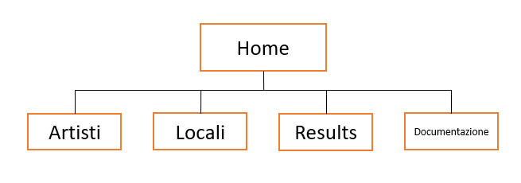
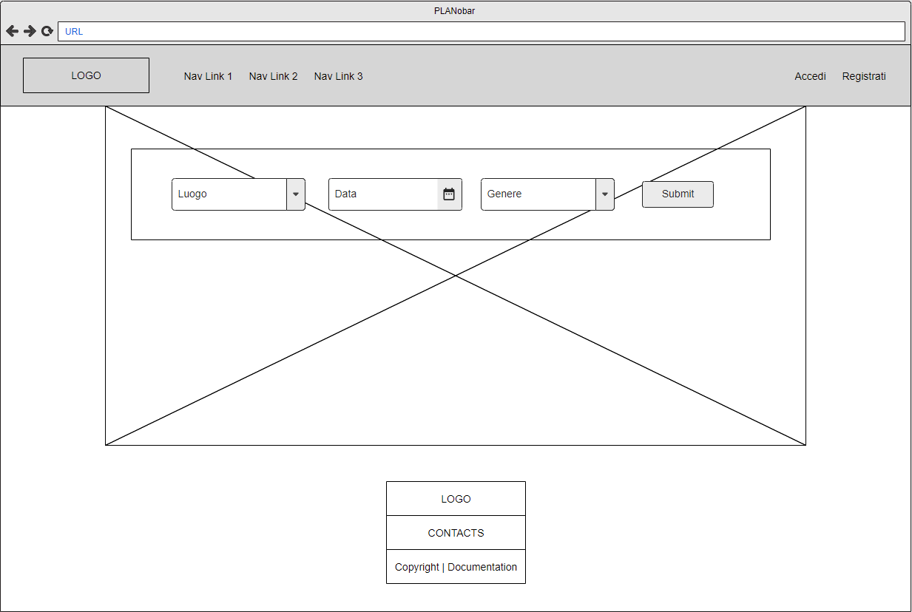
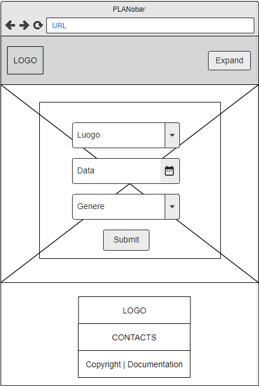

Documentazione
Abstract
Il sito si pone come obiettivo il collegamento tra band musicali e locali in modo da semplificare la ricerca di uno spazio dove musicisti e cantanti possano esibirsi: giovani artisti avranno la possibilità di suonare in tutta Italia prenotando con un click su PLANobar e, d'altro lato, i clienti potranno usufruire del sito per trovare concerti live a seconda dei propri gusti musicali. Smart ed efficace PLANobar promuove le piccole realtà musicali e risolve le indecisioni: dove passare la serata? Vediamo su PLANobar!
Project Management Plan
-
Benchmarking
-
Obiettivi
L’obiettivo principale del sito è semplificare il collegamento tra locali che offrono esibizioni di musica dal vivo e band musicali, le quali potranno trovare agevolmente un'occasione per esibirsi cercandola in base a data, luogo e genere musicale. Inoltre permette agli utenti di selezionare e scoprire nuovi eventi in base alle proprie preferenze e conoscere artisti che, magari, senza la giusta sponsorizzazione sarebbero sconosciuti al pubblico.
-
Target utente
Il sito si rivolge a locali che fanno musica dal vivo, a band di ogni genere musicale e ad un pubblico vasto senza limitazioni di età.
-
Competitors
-
iLiveMusic: app con il medesimo scopo del nostro sito. Non è più attiva dal 2020.
Siti da cui è possibile reperire informazioni sui locali che fanno muisca dal vivo, ad esempio:
-
-
-
Struttura e layout
-
Architettura del sito
 -
Wireframe
  -
Look and Feel
Si è scelto di utilizzare un design semplice e responsive, a una colonna. Come colori sono stati scelti l'arancione e il nero, che ricordano i colori di un concerto notturno, associazione che è ulteriormente sottolineata dall'immagine di background. Come font è stato selezionato il Roboto, chiaro e familiare agli utenti in quanto uno dei più utilizzati nel Web.
-
-
Linguaggi e strumenti
-
Linguaggi
HTML, CSS
-
Strumenti tecnologici
Bootstrap per la grafica
Adobe Photoshop per realizzare l'icona del sito e le icone dei social media
Font awesome per le altre icone
w3schools HTML Color Picker per la scelta dei colori
Googlefont per il font Roboto
github per la pubblicazione
moqups.com per la realizzazione del wireframe
Microsoft PwerPoint per la realizzazione dell'architettura del sito
Google Analytics per il monitoraggio delle visualizzazioni
-
Strategia Comunicativa
-
Background
PLANobar si propone di colmare un vuoto di mercato: l'unica piattaforma simile, iLiveMusic ha cessato le proprie attività nel 2020 a causa della pandemia, che ha bloccato tutti gli eventi musicali. Dunque ad oggi non esiste una piattaforma in grado di centralizzare la domanda e l'offerta per agevolare l'organizzazione dei concerti. E' possibile approfittare della ripresa delle attività musicali e sfruttare una campagna pubblicitaria più efficace per riuscire dove gli altri hanno fallito.
-
Obiettivi comunicativi
Il progetto si propone di creare una piattaforma che permetta la comunicazione tra artisti musicali e locali che organizzano eventi con musica dal vivo. Il sito sponsorizzato sui social permetterebbe di creare una rete stabile tra cliente-band-locale e potrebbe diventare il punto di riferimento di giovani e meno giovani per la ricerca di concerti e iniziative più adatte alle loro esigenze. Da sottolineare la situazione spesso complessa di molti artisti i quali nonostante ottime qualità musicali restano sconosciuti al pubblico a causa di una mancata sponsorizzazione: per rendere attuale delle doti solo potenziali è necessaria una buona comunicazione! Ecco perché sia dal punto di vista logistico che comunicativo PLANobar potrebbe rappresentare una innovazione.
-
Target audience e messaggio
Il sito si rivolge a tutte le età! Lo sviluppo dell’utilizzo dei social e di internet in generale permette la fruibilità a chiunque: dal nostalgico di vecchi generi musicali all’adolescente ascoltatore di trap e rap. La musica è un ambito di interesse e piacere concernente l’uomo a priori dell’età: PLANobar da una parte permette ad un pubblico adulto di selezionare locali comodi con determinati tipologie di musica e dall’altra a giovani che vogliono divertirsi in maniera “più spinta” di trovare un locale adatto alle proprie esigenze. Inoltre è un sito che consente di collegarsi a tutti i locali di Italia: ecco perché le band che vogliono esibirsi a seconda delle esigenze economiche e logistiche selezioneranno i luoghi più adatti a seconda delle proprie necessità.
-
Promozione
Il sito verrà sponsorizzato attraverso pagine social: in particolare Facebook, Instagram e TikTok rappresenteranno il punto raccolta per la fruibilità di PLANobar. Inoltre per pubblicizzare l’iniziativa si partirà da alcune delle principali città di Italia (Bologna, Napoli, Milano, Roma): si contatteranno direttamente i locali che fanno musica dal vivo per la disponibilità ad aderire al progetto e si organizzerà una campagna pubblicitaria attraverso eventi dedicati, manifesti e volantinaggio. Si creerà in questo modo una base per la futura espansione dell’utenza.
-
Valutazione dei risultati
Il successo andrà misurato sul nuomero di locali che aderiranno all'iniziativa e sul numero di visite al sito, gli account creati, e le interazioni social. Grazie all'analisi fatta tramite google analytics, possiamo osservare come sia stato registrato un buon numero di visualizzazioni nel primo giorno di attività.